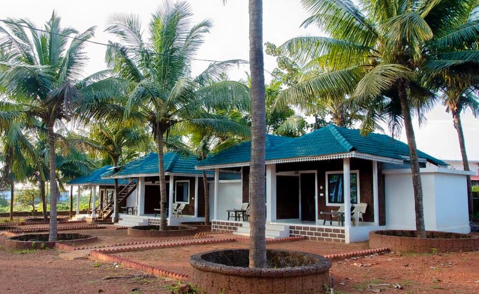

COCONUT TREE RESORT

Coconut Tree Resort has a restaurant, a shared lounge and garden in Gokarna. Boasting family rooms, this property also provides guests with a sun terrace. The accommodations offers a 24-hour front desk, room service and currency exchange for guests. Continental and buffet breakfast options are available every morning at the hotel. The area is popular for cycling, and car hire is available at Coconut Tree Resort.
Click here for more detailsSILVER AND SAND RESORT

About Resort Set in Kumta, 200 m from Gudeangadi Beach, Silver Sand Beach Cottages offers accommodation with a restaurant, free private parking, a bar and a garden. The accommodation provides a 24-hour front desk and room service for guests.
Click here for more detailsV RESORT

Located in Kumta, V Resorts Sanskruti Gokarna is near the beach. The area's natural beauty can be seen at Gokarna Beach and Om Beach. Visit our Gokarna travel guide. View in a map. View in a map. Map. What's nearby. Mahabaleswara Temple - 11 min walkGokarna Beach - 14 min walkMain Beach - 14 min walkKootlee Beach - 8 min driveOm Beach - 14 min drive.
Click here for more details